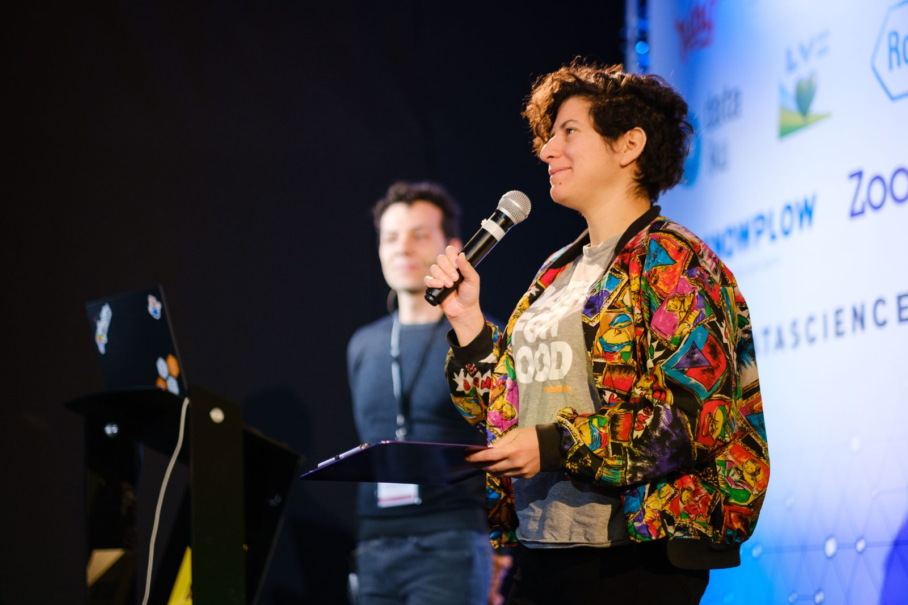
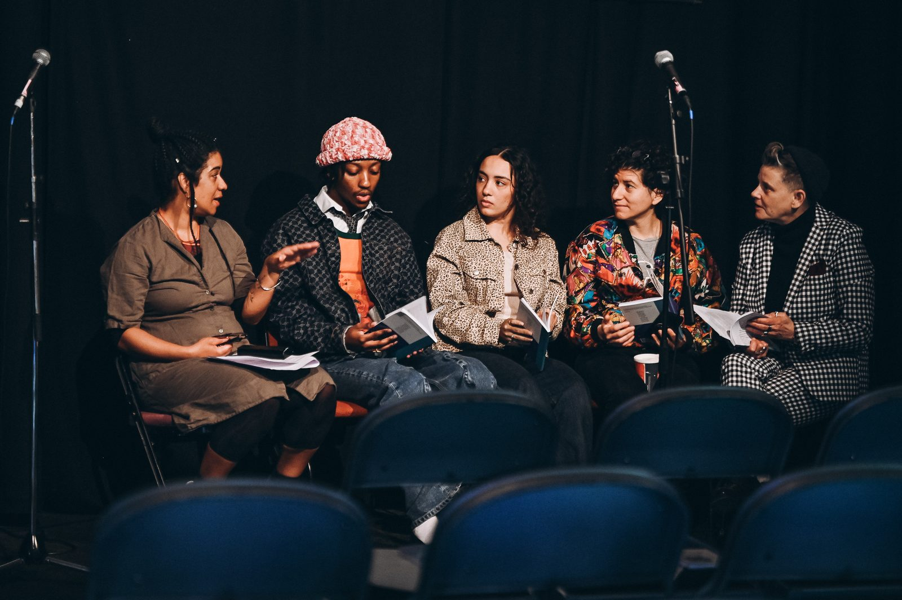

Using data for change across the social sector.
15+ years driving social change — from award-winning think tanks and Prime Ministerial units to leading a data science charity.

About
Giselle is a senior leader with 15+ years' experience in social change. She focuses on using data for change, most recently as CEO of DataKind UK, a volunteer-powered data science charity. Prior to that, her career has spanned award-winning think tanks, Prime Ministerial units and national charities.
Giselle combines subject expertise in using data and AI for good with deep experience of the charity sector. She is at her best as a leader, driving forward a vision and guiding others to fulfil their potential.
Highlights

I've been the talking head on the BBC and Sky News, hosted a 500-person event, briefed ministers on my analysis, and led a charity. I've consulted for leading grantmakers and government institutions, and became a leading expert on childcare and family policy.
I successfully campaigned for increased funding for and access to early years education, and was acknowledged by Number 10 as the key contributor to this change in Government policy. In my first ever job in the civil service, I was headhunted to be the principal analyst for Sir Philip Green's review of government spending. As CEO of DataKind UK, I raised £1.5m+ and led a diverse team of staff and hundreds of volunteers to transform how charities use data science and AI.
As a volunteer, I've supported Global Witness to use data to fight corruption, helped activists in Jordan through Data4Change and mentored young people in my community. I am currently on the Board of London Plus, supporting London's voluntary and community sector.
Current
I recently took a career break to develop my skills as a writer, during which I won an Emerging Writer's Award and was published in two literary journals — alongside maintaining senior-level advisory work including strategy and multi-year planning for Joseph Rowntree Foundation's Insight Infrastructure programme.
I'm now looking to get back into the sector. I love supporting people to be at their best, and roles that come with dynamic days and call for thoughtful navigation.
